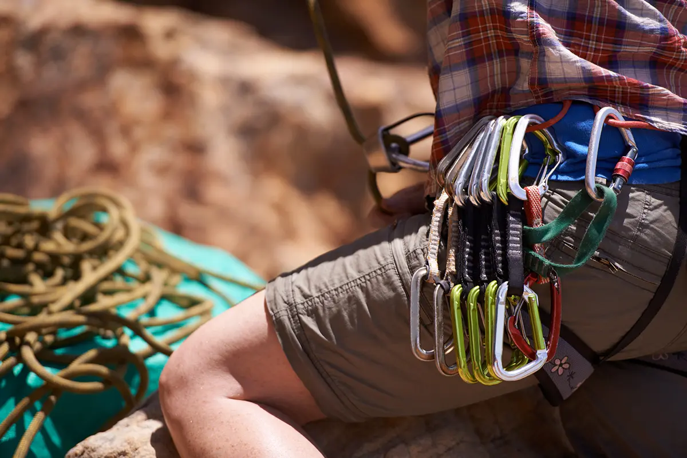
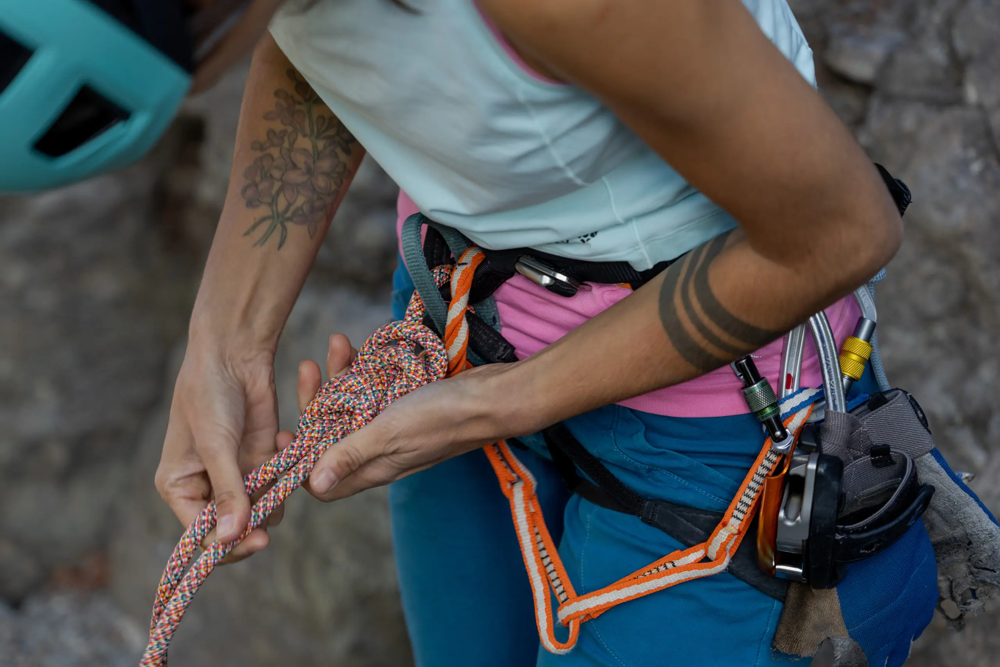

Essential Climbing Gear

Carabiners
Carabiners are essential for climbing and are used for connecting to anchors, connecting a climber to their rope, and attaching ropes to harnesses.

Rope and Harnesses
Essential safety equipment used for managing falls, supporting a climber, and for belaying and rappelling.
Safety Best Practices
Climb with a Partner
Know Your Limits
Double Check Your Gear
Double Check the Weather
Communicate
Respect the Environment
Indoor Climbing Notes
If you are planning to go climbing indoors, not as many safety precautions are needed, but it is still important you wear proper climbing shoes. Also, always make sure you are not standing beneath anyone, and that you have no one beneath you when you drop from the wall.